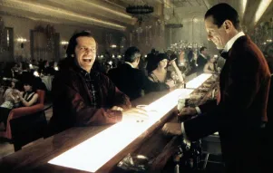
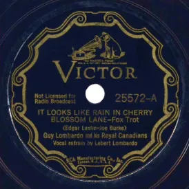

Time flies by. Sometimes the past pursues us, the present escapes us and the future makes us anxious.
Leyland Kirby takes us through a labyrinth of time with his album Everywhere at The End of Time.
under the name The Caretaker.This British composer has created a timeless work that spans six parts released between 2016 and 2019. Thus, the project represents 6 and a half hours of listening in total and mixes sound experiments, collages and noise music.

A la fois dans le contenu et la forme, cet album aborde le thème du temps et la détérioration de la mémoire jusqu’à la destruction complète de soi-même. Inspiré par la scène du bal hanté du film The Shining de Stanley Kubrick, Leyland Kirby va faire revivre une dernière fois les mémoires de fantômes du passé. Il utilise notamment des bandes sonores des années 1930 et 1940 qu’il va retravailler.
 Scène du bal du film The ShiningAll that follows is true est un des morceaux qui débute l'album. C’est l'une des compositions les plus puissantes. En effet, elle marque la transition entre la première et la deuxième étape vers l’oubli et la folie. L'artiste a mixé la douceur d’une musique nostalgique, celle de Maurice Winnick ( It Looks Like Rain In Cherry Blossom Lane -1932) et des bruits parasites, des répétitions, des ruptures. Ce mélange crée un sentiment de malaise tout en gardant l’aspect calme et rassurant de la nostalgie.
 Disque de la musique It looks like rain in cherry blossom laneLeyland Kirby donne naissance à une musique qui est à la fois familière et inconnue. Il nous emmène à la frontière entre le souvenir et l’oubli.